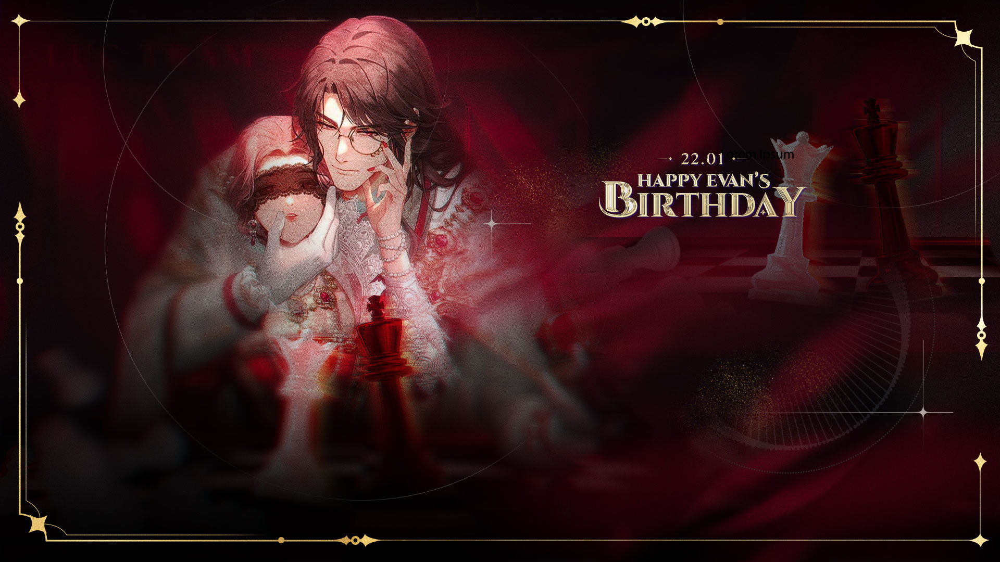
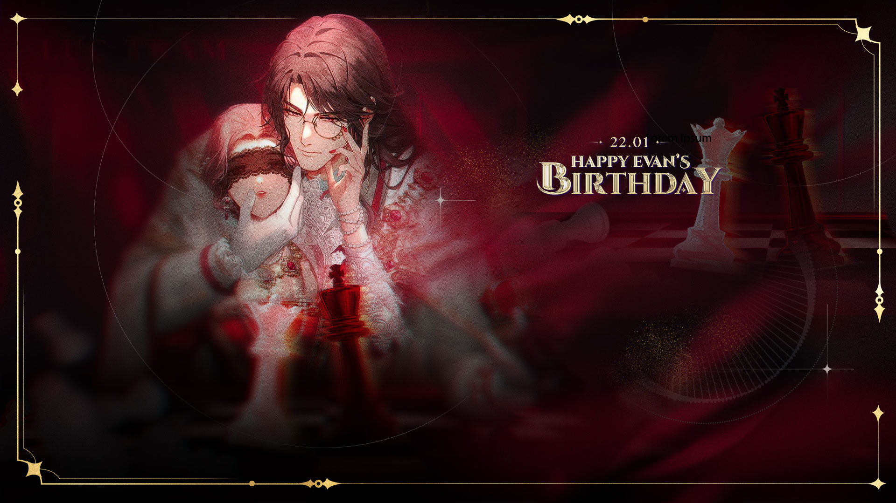

Theo truyền thuyết, Thần tạo hóa đã tạo ra loài người và thương xót họ. Điều này đã chọc giận Thần sáng thế, ngài ra lệnh cho Huyết tộc tiêu diệt loài người, tuy nhiên vì mối giao tình với Thần tạo hóa, Huyết tộc đã từ chối, chọc giận Thần sáng thế….
Theo truyền thuyết, Thần tạo hóa đã tạo ra loài người và thương xót họ. Điều này đã chọc giận Thần sáng thế, ngài ra lệnh cho Huyết tộc tiêu diệt loài người, tuy nhiên vì mối giao tình với Thần tạo hóa, Huyết tộc đã từ chối, chọc giận Thần sáng thế. Trong cơn thịnh nộ, Thần sáng thế đày những vị thần nổi loạn này xuống đáy biển, một bộ phận nhỏ trốn thoát dưới sự giúp đỡ của Hoả thần. Mà một bộ phận khác lại tự nguyện nhận lấy cơn thịnh nộ của thiên đường, trăm năm trước được thả ra từ đáy biển . Linh tộc là sứ giả của Thần tạo hoá. Trong cuộc chiến giữa Thần tạo hoá và Thần sáng thế, Thần sáng thế biến sứ giả của Thần tạo hoá thành cây cối và động vật, đưa xuống nhân gian. MC/Bạn (hay chính là Thần tạo hóa) lớn lên cùng mẹ và bà ngoại sau khi cha mẹ ly hôn. Sau khi cả mẹ và bà ngoại mất, cô chuyển ra nước ngoài sống với người cha mà cô đã xa cách, người đã sắp xếp hôn ước trái với ý muốn của cô. Sau khi hủy bỏ hôn ước của bản thân và trở về thành phố Quang Khải, để theo đuổi ước mơ, cô tham gia cuộc thi thời trang của Tập đoàn Warson. Dù không giành chiến thắng, nhưng tài năng của cô đã được công nhận, dẫn đến lời mời gia nhập Tập đoàn Warson với tư cách là một nhà thiết kế. Tại đây, với năng lực Giao Cảm của bản thân, cô làm quen với các nam chính và khám phá bí mật ẩn giấu dưới thành phố này.
 
